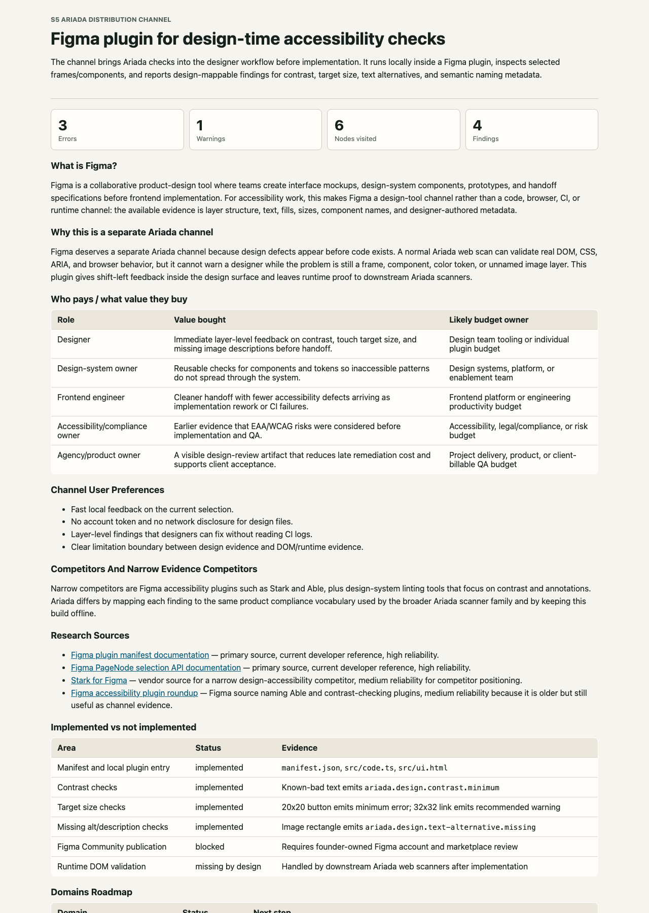

S5 Ariada distribution channel
Figma plugin for design-time accessibility checks
The channel brings Ariada checks into the designer workflow before implementation. It runs locally inside a Figma plugin, inspects selected frames/components, and reports design-mappable findings for contrast, target size, text alternatives, and semantic naming metadata.
What is Figma?
Figma is a collaborative product-design tool where teams create interface mockups, design-system components, prototypes, and handoff specifications before frontend implementation. For accessibility work, this makes Figma a design-tool channel rather than a code, browser, CI, or runtime channel: the available evidence is layer structure, text, fills, sizes, component names, and designer-authored metadata.
Why this is a separate Ariada channel
Figma deserves a separate Ariada channel because design defects appear before code exists. A normal Ariada web scan can validate real DOM, CSS, ARIA, and browser behavior, but it cannot warn a designer while the problem is still a frame, component, color token, or unnamed image layer. This plugin gives shift-left feedback inside the design surface and leaves runtime proof to downstream Ariada scanners.
Who pays / what value they buy
| Role | Value bought | Likely budget owner |
|---|---|---|
| Designer | Immediate layer-level feedback on contrast, touch target size, and missing image descriptions before handoff. | Design team tooling or individual plugin budget |
| Design-system owner | Reusable checks for components and tokens so inaccessible patterns do not spread through the system. | Design systems, platform, or enablement team |
| Frontend engineer | Cleaner handoff with fewer accessibility defects arriving as implementation rework or CI failures. | Frontend platform or engineering productivity budget |
| Accessibility/compliance owner | Earlier evidence that EAA/WCAG risks were considered before implementation and QA. | Accessibility, legal/compliance, or risk budget |
| Agency/product owner | A visible design-review artifact that reduces late remediation cost and supports client acceptance. | Project delivery, product, or client-billable QA budget |
Channel User Preferences
- Fast local feedback on the current selection.
- No account token and no network disclosure for design files.
- Layer-level findings that designers can fix without reading CI logs.
- Clear limitation boundary between design evidence and DOM/runtime evidence.
Competitors And Narrow Evidence Competitors
Narrow competitors are Figma accessibility plugins such as Stark and Able, plus design-system linting tools that focus on contrast and annotations. Ariada differs by mapping each finding to the same product compliance vocabulary used by the broader Ariada scanner family and by keeping this build offline.
Research Sources
- Figma plugin manifest documentation — primary source, current developer reference, high reliability.
- Figma PageNode selection API documentation — primary source, current developer reference, high reliability.
- Stark for Figma — vendor source for a narrow design-accessibility competitor, medium reliability for competitor positioning.
- Figma accessibility plugin roundup — Figma source naming Able and contrast-checking plugins, medium reliability because it is older but still useful as channel evidence.
Implemented vs not implemented
| Area | Status | Evidence |
|---|---|---|
| Manifest and local plugin entry | implemented | manifest.json, src/code.ts, src/ui.html |
| Contrast checks | implemented | Known-bad text emits ariada.design.contrast.minimum |
| Target size checks | implemented | 20x20 button emits minimum error; 32x32 link emits recommended warning |
| Missing alt/description checks | implemented | Image rectangle emits ariada.design.text-alternative.missing |
| Figma Community publication | blocked | Requires founder-owned Figma account and marketplace review |
| Runtime DOM validation | missing by design | Handled by downstream Ariada web scanners after implementation |
Domains Roadmap
| Domain | Status | Next step |
|---|---|---|
| WCAG accessibility | implemented | Expand design-mappable rules beyond contrast, targets, and text alternatives |
| EAA product evidence | planned | Export design evidence into Ariada evidence packs |
| Brand/design governance | planned | Add token naming and component annotation checks |
| Data provenance | planned | Record source frame metadata when a user exports a report |
Technical Connectors
The plugin uses Figma figma.currentPage.selection, local layer properties, and plugin data keys role, alt, aria-label, description, decorative, and headingLevel. The manifest declares networkAccess.allowedDomains: ["none"].
E2E Test Adequacy
The harness scans a representative nested Figma node fixture with known low contrast, undersized interactive controls, and missing image metadata. It proves scanner behavior and report generation. Desktop Figma manual loading remains a human-gated check because this shell cannot automate the Figma desktop app or Figma Community submission.
Raw JSON And Logs
Embedded Screenshot
{kind=link}

Blockers
- Figma Community publishing requires founder account ownership and marketplace review.
- Live Figma desktop loading must be verified manually after local build.
- Export into shared Ariada evidence packs is not implemented in this channel build.
Distribution And Monetization Next Steps
- Founder loads
manifest.jsonin Figma desktop development mode. - After manual smoke test, prepare Figma Community listing screenshots and privacy copy emphasizing no network access.
- Bundle the plugin as a free lead channel for design teams, with paid value in evidence export, team policy packs, and downstream CI gating.
Raw Normalized Report
{
"scannedAt": "2026-07-01T00:00:00.000Z",
"selectedNodeCount": 1,
"visitedNodeCount": 6,
"summary": {
"errors": 3,
"warnings": 1,
"findings": 4
},
"findings": [
{
"id": "ariada.design.contrast.minimum:1:2",
"nodeId": "1:2",
"nodeName": "H1 Checkout",
"ruleId": "ariada.design.contrast.minimum",
"wcag": "WCAG 1.4.3 Contrast (Minimum)",
"severity": "error",
"message": "H1 Checkout contrast is 2.68:1, below 4.5:1.",
"help": "Increase foreground/background contrast before design handoff.",
"metrics": {
"ratio": 2.68,
"minimum": 4.5,
"largeText": false
}
},
{
"id": "ariada.design.target-size.minimum:1:3",
"nodeId": "1:3",
"nodeName": "primary button",
"ruleId": "ariada.design.target-size.minimum",
"wcag": "WCAG 2.5.8 Target Size (Minimum)",
"severity": "error",
"message": "primary button target is 20x20px; minimum side is below 24px.",
"help": "Resize interactive controls so the target is at least 24x24px.",
"metrics": {
"width": 20,
"height": 20,
"minimumSide": 24
}
},
{
"id": "ariada.design.text-alternative.missing:1:4",
"nodeId": "1:4",
"nodeName": "hero image",
"ruleId": "ariada.design.text-alternative.missing",
"wcag": "WCAG 1.1.1 Non-text Content",
"severity": "error",
"message": "hero image looks like meaningful imagery but has no alt or description metadata.",
"help": "Add plugin data keys alt, aria-label, or description, or mark decorative=true.",
"metrics": {
"hasImageFill": true,
"imageLikeName": true
}
},
{
"id": "ariada.design.target-size.recommended:1:6",
"nodeId": "1:6",
"nodeName": "secondary link",
"ruleId": "ariada.design.target-size.recommended",
"wcag": "WCAG 2.5.5 Target Size (Enhanced)",
"severity": "warning",
"message": "secondary link target is 32x32px; 44x44px is preferred for touch.",
"help": "Prefer a 44x44px touch target where layout permits.",
"metrics": {
"width": 32,
"height": 32,
"recommendedSide": 44
}
}
]
}